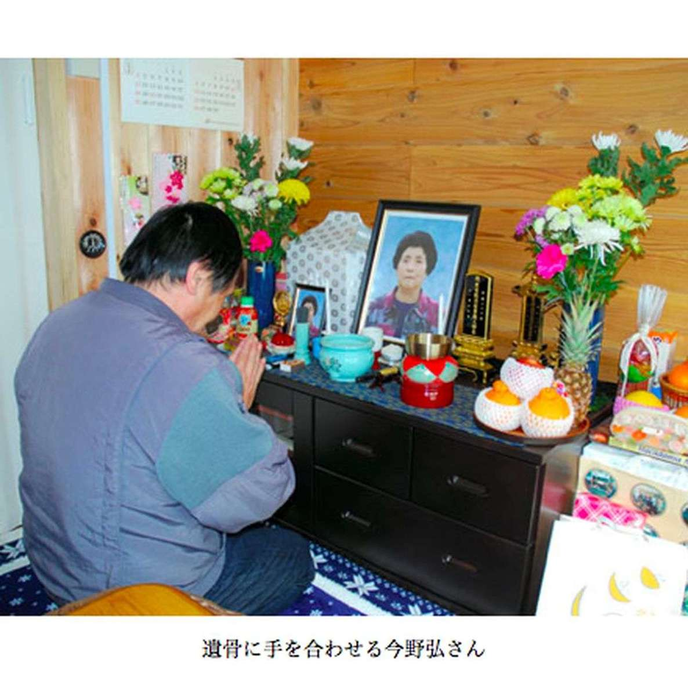
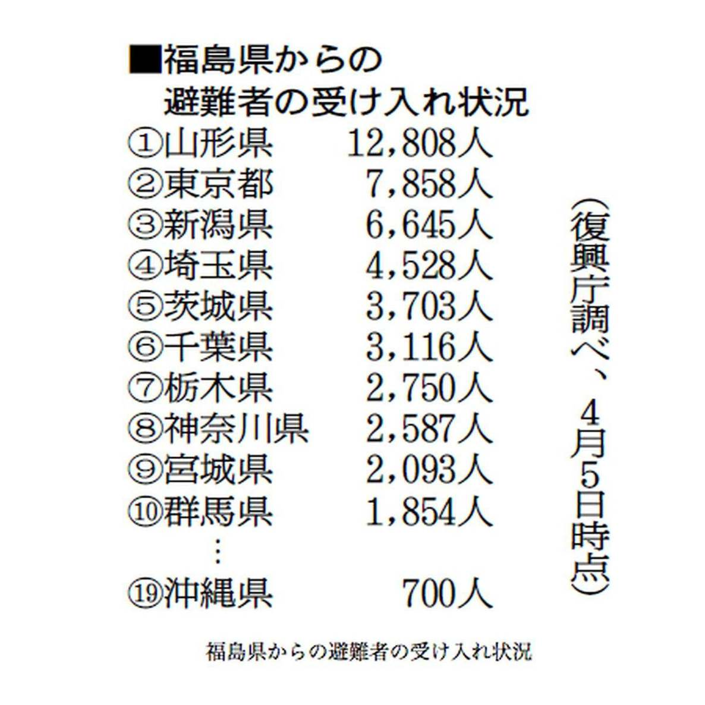

| プロメテウスの罠〔１０〕 長安寺の遺骨「『弔い』への長い道」 (朝日新聞デジタルＳＥＬＥＣＴ) | |
| 朝日新聞 | |
| (2013) | |
地震や原発危機の直接的な被害から逃れられたとしても、被災者が立ち向かわなければならない課題は、いまだに山積みだ。福島県浪江町の計画的避難地域内に立つ真言宗長安寺では、３３人分の遺骨が、埋葬できないまま保管されている。放射線量が高く、遺族が帰れないためだ。この３３人とその家族らの足跡をたどることで、「終わらない被害」の現状を報告する。
内容紹介
地震や原発危機の直接的な被害から逃れられたとしても、被災者が立ち向かわなければならない課題は、いまだに山積みだ。福島県浪江町の計画的避難地域内に立つ真言宗長安寺では、３３人分の遺骨が、埋葬できないまま保管されている。放射線量が高く、遺族が帰れないためだ。この３３人とその家族らの足跡をたどることで、「終わらない被害」の現状を報告する。
初出
朝日新聞 二〇一二年四月十五日～五月十日
第１章 死んでも帰れない
第２章 爆発した！戻るな！
第３章 とにかく寒かった
第４章 墓で眠らせたいけど
第５章 母はみるみる弱った
第６章 ２６歳、東海村での死
第７章 「あっせんしただけ」
第８章 認められぬ火葬代
第９章 根こそぎ奪われた
第１０章 交錯する望郷の念
第１１章 旧満州の修羅場、再び
第１２章 不安駆るバリケード
第１３章 政府の要請蹴った
第１４章 遅い、安い、不誠実
第１５章 命の値段だなんて
第１６章 へこんでいく人々
第１７章 引退なんて出来ない
第１８章 ７５歳、「庭元」の死
第１９章 沖縄に逃げたけれど
第２０章 夫に泣いて訴えた
第２１章 毎日届いた無料弁当
第２２章 元気ならそれでいい
第２３章 そんな線引きなんて
第２４章 たったの８万円
第２５章 落ち着きたいのです
福島県浪江町南津島に、江戸時代から続く寺がある。真言宗長安寺。その本堂に骨壺（こつつぼ）の入った箱が山と積まれていた。
数えると３３人分あった。原発事故の避難後に亡くなった人たちだ。
福島第一原発から北西に約２８キロ。政府の計画的避難区域に寺はある。山あいの津島地区は津波の被害はなく、原発事故がすべてだった。
本来ならとっくに納骨されているはずだ。しかし放射線量が毎時５マイクロシーベルト前後と高く、遺族が帰れるかどうか分からないため、埋葬できない。そのため、住職の横山周豊（しゅうほう）（７１）が本堂で預かっている。
横山自身、寺には住めない。福島市に避難中の身だ。
２０１２年２月末、横山は檀家（だんか）の人たちと寺を掃除に訪れた。２０センチを超える雪が寺に向かう道を覆っていた。
「ずいぶんと骨（こつ）たまっているんだな」
本堂に入るなり、檀家の女性が遺骨の山に驚いた。
「１年でこれですから。ここに入りきらなくなったら、どうしたらいいでしょうな」。横山は悩む。
遺骨が入った箱には、横山が名札をつけた。荷札に筆書きだが、取り違えたら大変だと思ったからだ。
境内の墓石は地震後、８割が倒れた。石碑は重く、重機を使わないと持ち上がらない。いまも倒れたままの石碑がある。
横山は、遺骨のそばに日本酒の一升瓶や、桃やみかんの缶詰を置いた。「何もお供えがないとかわいそうですからね」
なまものは置かないよう、遺族に頼んでいる。
本尊の不動明王は地震でバラバラに壊れた。仮修理して横山の避難先に置いてある。横山は遺骨の山に向かってお経を唱えた。
供養が終わり、本堂を掃除していると、横山の携帯電話が鳴った。檀家の人からだった。
「また夕べ、亡くなりました。その人もお墓は津島ですから、遺骨はここにくることになるでしょう」
しかし、問題は納骨だった。
お墓に埋めることができないからだ。しかも、遺骨はどんどん増えていく。
「死んでも帰れない。生きていても帰れない。魂がさまよったままなのです」
福島第一原発４号機が爆発したのは１１年３月１５日。福島県浪江町津島の長安寺住職、横山周豊（７１）はその朝早く二本松市へ向かっていた。避難先で亡くなった檀家（だんか）の男性の火葬に立ち会うためだった。
男性は本田正（８４）。浪江町赤宇木（あこうぎ）の住民で、事故当時は双葉厚生病院に入院していた。
火葬に参列した親族らはたった８人だった。事故直後だったため連絡がとれず、とれてもガソリンがなく集まることができなかったのだ。
本田には５人の子がいたが、参列できたのは１人だけだった。
お経の最中、何度も携帯の着信音がした。お経が終わって横山がかけ直すと、妻の米子（よねこ）（７１）が叫んでいた。
「原発が爆発した！ 津島に戻ってくるな！」
１１年３月１２日の水素爆発のあと、浪江町津島地区には大勢の避難民が逃げてきていた。長安寺にも１３０人が身を寄せている。しかし、３月１５日の爆発事故をテレビで知り、避難民は今度は二本松市に向かった。
昼過ぎ、妻が火葬場に車で迎えに来た。袈裟（けさ）姿のまま、妻の運転で埼玉県の次女（４２）の家へ向かった。渋滞がひどく、着いたのは明け方４時だった。
３週間後の１１年４月６日、「檀家と離れ離れになってはいけない」と福島に戻った。しかし寺には住めなかった。
本田が亡くなって一周忌が過ぎたが、葬儀はまだしていない。遺骨を長安寺に置いたままだ。
川崎市に住む本田の長女、信子（５８）は地震翌々日の１１年３月１３日、避難所という避難所に電話をかけ、ようやく二本松市で探し当てた。しかし電話口に出た看護師は「亡くなっています」と告げた。
地震直前の１１年３月１１日午前、一番上の兄が病院に見舞いにいった。そのときは元気だった。父の死が信じられず、信子は福島市に住む弟に頼み、二本松市まで行ってもらった。「父はやっぱり亡くなっていました」
信子は火葬に参列できなかった。地震で道路が寸断されていたためだ。親の死に目はおろか、火葬にも立ち会うことはかなわなかった。
「父がいつ、どのように亡くなったのか、家族はだれも知らないんです」
双葉厚生病院から自衛隊のヘリで避難した入院患者のうち、１１年３月１２日からの２日間で、本田のほか３人が亡くなっている。
福島県浪江町の長安寺本堂に遺骨が置かれたままになっている３３人。その人々はどんな人生を歩み、どのように亡くなったのか。
その１人、今野君雄も、震災時は双葉厚生病院に入院していた。避難を繰り返し、事故から３カ月後の１１年６月、７６歳で死んだ。
浪江町の赤宇木生まれ。トラック運転手をしていて、千葉県などで暮らした。３０年前に浪江町川添に家を買い、家族と移り住んだ。
肺炎をこじらせて呼吸困難となり、１１年３月６日に救急車で厚生病院に運ばれた。医師からは「安静にしましょう」といわれた。
原発からわずか４キロの厚生病院は、震災後は大騒ぎだった。
君雄は大学ノートに日記をつけていた。それによると１１年３月１１日、３階の病室から２階まで自力で下り、そこで夜明かしした。パジャマにはんてんを羽織り、毛布１枚にくるまっただけだった。
翌１２日昼、避難のバスに乗った。川俣町の鶴沢公民館に向かう道は通常は１時間半で着く。しかし、途中の国道１１４号は大渋滞で、７時間かかった。
翌１３日朝、福島市で暮らす長女の松崎洋子（４８）に君雄から電話がかかってきた。しかし呼吸が苦しくて話せない。代わった看護師が「早く迎えにきてください」といった。
洋子が車で迎えに行くと、担当の医師が紙切れに薬の名前を走り書きして渡した。「これを持って福島県立医大に連れて行って」
君雄は、公民館の布団から起き上がれなかった。洋子は車いすを借りて車まで運び、福島県立医大病院に向かった。そのまま入院となったが、３カ月後に亡くなった。
洋子が君雄を迎えに行ったとき、川俣町の公民館は、畳の上に布団が敷かれ、大勢の病人が寝かされていた。医師はあちこちに電話をかけ、患者の搬送先を探していた。その様子は「収拾のつかない混乱でした」と洋子はいう。
君雄は厚生病院では酸素吸入をしていた。しかし避難の間は吸入ができなかった。どれほど苦しかっただろうか、と思う。
「とにかく寒かった」。君雄は、避難の間のことを何度もそう話した。福島県立医大病院の診断書には「避難生活による悪化」とあった。
洋子はいう。
「原発事故が起きなければ、父はもう少し長生きできたはずです」
原発事故の避難後に亡くなった浪江町の今野君雄は、自宅から５分の場所にお墓を買っていた。家から見えるところに眠りたいと思ったからだ。しかし墓は警戒区域内となり、立ち入ることができない。
君雄の四十九日の法要は２０１１年夏、福島県桑折町の仮設住宅で行われた。
君雄の遺骨をどこに置くか。娘の松崎洋子は兄弟たちと電話で話し合ったが、結論は出なかった。長安寺住職の横山周豊に相談すると「お預かりしましょうか」といわれた。その厚意に甘えることにした。
四十九日の法要が終わると、洋子は親族７人で車２台に分乗し、横山の車とともに浪江町津島地区南津島の長安寺に向かった。放射線量が高いので、小学生や中学生の孫やひ孫たちは連れて行けなかった。
国道１１４号を通り、浪江町に入る手前の川俣町山木屋地区にさしかかったところで、横山が車を止めて降りてきた。
「ここから先はマスクをつけなさい」
夏なのに全員がマスクをし、洋子は長袖のシャツを羽織った。
寺の手前で警察が検問所をつくっている。洋子たちはここで３０分間足止めされた。
計画的避難区域に入るには町の通行証が必要だ。福島市に住む洋子も、よそから来た親族も持っていなかった。横山が警官と交渉し、全員が免許証や保険証を提示してやっと中に入れてもらえた。
長安寺に着いて、洋子は遺骨の山にびっくりした。
「死んでまで行き場がない人が、こんなにいっぱいいるんだ」
横山がお経をあげ、洋子たちは焼香した。横山から「長居せず、早く帰りなさい」といわれ、早々に切り上げて寺を後にした。寺の周辺は毎時５マイクロシーベルト前後あったからだ。父の思い出話をする余裕もなかった。
７０歳で仕事を引退した君雄は干し柿づくりが得意だった。みごとな干し柿をつくり、津島の直売所で売るのを、老後の楽しみにしていた。２０１０年、干し柿をたくさんつくれるようにと、ベランダを４０万円かけて広く改装したほどだ。
父が自分でつくった墓に眠らせてやりたい。だが放射線量が高いところに埋めていいものか。だれも墓参に行けなくなるのではないか。洋子は結論を出せないでいる。
「いまはすべてが中ぶらりん。お墓までも」
福島市の松崎洋子の場合、父親だけではない。原発事故の避難で、親戚が２人も死んでいる。
その１人、今野キヨ子は義理の叔母に当たる。浪江町赤宇木で、夫、長男、長女、次男の家族５人暮らし。元気で、近所の人たちと活発につきあっていた。
しかし避難生活が続いた１１年１１月、急に元気がなくなり、心不全で死んだ。８２歳だった。
原発事故５日後の１１年３月１６日、キヨ子は伊達市の親戚の家に避難した。さらに１１年４月中旬、裏磐梯のペンションに移る。
再避難して１０日後の朝、キヨ子は「ご飯食べられない」といい、食堂に行かなかった。家族が朝食を済ませて戻ると、キヨ子は青白い顔をしている。病院に行くと心不全の疑いといわれた。そのまま救急車で会津若松市の病院に運ばれた。
１１年９月、仮設住宅が当たり、長男の弘（５６）たち３人は二本松市に移った。会津若松の病院とは７５キロの道のりだ。弘と長女の京子（４５）は交代で毎日、車で見舞いに通った。
以前のキヨ子の元気さから考えると、１カ月ぐらいで退院できるだろうと家族は思っていた。しかし、キヨ子はみるみる弱っていった。
「あの年齢で１カ月も体を動かさないと、こんなに弱ってしまうんですね」と京子はいう。結局、一度も退院できずに亡くなった。
浪江に帰りたい、がキヨ子の口癖だったと京子はいう。
「最初に浪江を出るときも、母は『オラは避難したくねえ』といっていたんです」
転々と避難し、故郷から１００キロの道のりの知らない土地の病院に入った。看護師が話す言葉は会津弁で、浜通（はまどお）りに住むキヨ子には理解しにくい。「何いってるんだか分からねえことがあるんだ」とこぼした。
京子は「来年になると浪江に帰れるよ」とうそをつき、そんな母に期待を持たせようとした。
家族は、キヨ子の遺骨を長安寺に預けず、仮設住宅に置いている。１人にするのがかわいそうだからだ。
キヨ子の葬式は１週間待たされた。葬儀会社の予約がいっぱいだったからだ。その間、遺体は葬儀会社に置いておくしかなかった。
葬儀は二本松市で行われ、長安寺住職の横山周豊がお経をあげた。喪主の弘があいさつした。
「母は放射能で命を奪われたのです。避難がなければ、あれほど苦しむ必要はなかった」

長安寺に置かれた遺骨の３３人の中には、自ら命を絶った者もいる。
松本英之は１１年６月、首をつって死んだ。２６歳だった。
英之は福島第一原発などで下働きをする労働者だった。一家６人は浪江町加倉に住んでいた。原発事故後は二本松市の岳（だけ）温泉のホテルに避難する。避難所となったホテルにはほかに大勢の浪江町民が逃れていた。
茨城県東海村へ働きに行かないか――。英之の携帯電話にそんな誘いがあったのは１１年６月に入ってすぐのころだった。相手は、浪江町の土建業者（３８）だった。
英之は、その業者に雇われて出稼ぎに行くことにした。母の正子（まさこ）（５５）は作業着や下着を衣料品店で買って英之に渡した。
１１年６月１３日、英之は避難所を出た。行き先は東海村の東海第二原発だった。県外で働くのは初めてだ。
「１カ月働いてくる。お金が足りなくなったら口座に振り込むから、お母さん、引き出してけろ」。正子にはそういい残した。
２日後の１５日朝、父親の美寿（よしとし）（５４）は英之に電話をしている。「元気か？」と聞くと「うん」。少し元気がない様子だったが、最後は「がんばるよ」と電話を切った。
その３日後。英之に声をかけた土建業者から、正子に電話があった。英之が滞在先の民宿を出たまま戻ってこないのだという。
正子が心配すると、「捜すことねえべ。カノジョの所に行っているんだべ」。警察にはいわない方がいい、といった。
美寿や兄たちが携帯電話に何度もかけた。しかし、呼び出し音がするだけだ。ただごとではないと感じた美寿はその夜、二本松警察署に捜索願を出した。
翌１９日の夕方。茨城県のひたちなか西警察署から電話がかかり、死亡を告げられた。東海村の山林で首をつって死んでいたのだという。
出稼ぎに行って３日後のことだった。遺書はなかった。
英之は３人兄弟の末っ子だ。身長１８０センチ、体重９０キロの恵まれた体格。中学から柔道を始め、県大会まで勝ち進んだこともある。二本松市の避難所では副班長を務め、食事を配って回るなどみんなの世話を焼くタイプだった。
「責任感が強い子だった。自分が何とかしなければと、思い詰めたのだろうか」
翌日、美寿は茨城県の警察署まで車を飛ばした。
父親の松本美寿（よしとし）（５４）が茨城県の警察署に着くと、自殺した息子の英之が東海第二原発で働いていた先の会社の業務部長らがいた。しかし、英之に仕事をあっせんした土建業者（３８）は来ていなかった。
「雇った人夫が死んでも顔見せに来ねえのか！」
業者に何度か電話をかけた。しかし「おれは派遣であっせんしただけだ。関係ない」といわれた。
英之は浪江町にいたころ、その業者に雇われる形で、福島第一原発や第二原発でペンキを塗ったり、ポンプの補修をしたりしていた。
英之がどの会社と雇用契約を結んでいるのか。美寿にはさっぱり分からなかった。社会保険もなかった。
勤め先をたどっていくと、英之は土建業者から下請けに派遣され、そこからさらに元請けの別の会社に派遣されていた。二重派遣だ。職業安定法に違反している可能性が高い。
下請けは福島県相馬市にある。社長によると、元請けから「人いないか？」と頼まれて英之を派遣した。英之を雇った土建業者は顔見知りだった。その業者からは「うちの社員だ」と英之を紹介されている。
元請けは福島県いわき市にある。業務部長らによると、英之は教育が終わり、東海第二原発の現場に入る矢先だった。
滞在していたのは民宿の２人部屋だ。英之は自殺したその日は夜１０時に部屋を出て行ったという。同宿者は「彼女の所へでも行ったのだろう」と思っていたという。
自殺が分かった後、業務部長が土建業者に連絡を取ると、「社員ではない」といわれた。「それはおかしいだろう」ともめたという。
業務部長は英之の通夜に参列し、香典は置いたが、それ以上の補償はしていない。
「仕事が終わった後のプライベートな話ですから」
英之の雇用が違法の可能性があることは下請けも元請けも分かっている。下請けは「二重派遣、三重派遣のようになるので......」と口ごもる。元請けも「今は雇用保険など、書類をきちんとみている」という。
英之の死の責任はいったいだれにあるのか。「何ともいいようがない」（下請け）、「全体の責任じゃないですか」（元請け）。土建業者は取材に応じていない。
美寿の口座には１１年８月１５日、３日分の給料３万９千円が振り込まれた。土建業者に代わって、下請けから払われたものだった。
浪江町の松本美寿（よしとし）は１１年８月、自殺した息子の英之の火葬代１６万円の支払いを、町を通じて福島県に申請した。災害救助法で、震災が原因で死んだ人の葬儀費用を払ってもらえると聞いたからだ。
しかし２カ月半後、却下された。福島県が町にあてた「自殺は該当しない」という通知書とともに、美寿がつくった申請書類が町から返送されてきた。
災害救助法によると、災害の死亡者のひつぎや骨つぼの代金、埋葬・火葬代を、国が２０万１千円を限度に支払うことになっている。
今回の震災では、原発避難の死者も、１１年７月までに火葬を済ませた場合は対象になった。美寿は、息子は原発事故で追い詰められて自殺したと思っていたので、当然、対象になるだろうと考えていた。
美寿に届いた県の文書には、自殺を対象外にしたのは、「厚生労働省の見解による」とあった。納得できなかったが、それ以上の問い合わせはしなかった。
福島県に尋ねてみた。
県避難者支援課の主任主査、目黒幹浩は、必ずしも自殺だからといって除外するということではない、といった。当時、厚労省とやりとりしたメモ書きをもとに説明する。
「当初は自殺は対象外と考えていましたが、震災に関連がある場合もあるので、百％だめではないということにしました」
厚労省の災害救助・救援対策室救助係長、吉元信治も「自殺だからといって対象外にしていることはありません」と話す。
ではなぜ、美寿に却下の回答をしたのか。
国も県も「当時の公式な記録が残っていないので、詳しい経緯は分からない」とのことだった。
厚労省の吉元は、福島県の文書は誤解を招く書き方だという。しかし「いったん却下されているので、ひっくり返すのは難しいでしょう」。
国の説明も県の説明も、よく分からない。とにかく結果として、息子の英之は対象から外された。
美寿は納得できないでいる。
「まったく筋が通っていないじゃないか」
内閣府の統計によると、福島県の自殺者は２０１１年は５２５人だった。震災関連で自殺したとみられる人は、１２年２月までで１１人に上る。
福島県によると、自殺で火葬代を認めたケースはなかったという。
福島県浪江町では原発事故後、松本英之のほかにもう１人が自殺している。赤宇木（あこうぎ）の男性だ。
男性は１１年１１月、避難先から自宅に戻り、包丁で腹を刺して死んだ。５８歳だった。遺書はなかった。
親族は、家を追われて帰る場所がなくなったと思い詰めたのではないか、と見る。「原発事故さえなければ自殺なんかしなかった」
１２年２月中旬、二本松市で「赤宇木の集い」が開かれた。赤宇木から避難している人々の集まりだ。
集落から自殺者が２人も出たため、区長の今野義人（６７）が呼びかけた。９０人の避難者が集まった。集落の人たちが一堂に集まるのは避難後初めてのことだった。
最初に今野があいさつに立った。
「３月１１日に起きたのは天災だったが、そのあと起きた人災のため、私たちは放射能に追われて転々としなければならなくなった。東電の原発の爆発は私たちの生活を根こそぎ奪ってしまった」
続いて町長の馬場有（たもつ）（６３）が立ち、「赤宇木は年間の放射線量が２００ミリシーベルトになると推定される」と説明した。
住民から「いつ帰れるのか」と質問が出た。しかし馬場にその判断ができるわけはない。
「いつ帰れるのか、何年ごろというのは分かりません。分かるのは、長くかかるということだけです」
町議の一人は「赤宇木に戻ることは絶望的だと思う」と発言した。
集まった住民はほとんどが年配者だった。全員に「なみえ焼そば」が出た。全国Ｂ級グルメ大会で４位になったご当地フードだ。
集まりの終わり近くになって、包丁で自殺した男性の話が出た。いい出したのは今野孟信（たけのぶ）（８３）。町議会議長を務めたことのある長老だ。
「あれの自殺は、これは最大の抵抗だ。切腹して死んだ思いを、私たちは大切にしなければいけない」
孟信に続き、区長の今野も「彼の死は原発への抗議だ」と述べた。
終了後、馬場は語った。
「人間には、耐えられる限界というものがある。それを考えて、行政も対応していかないといけない」
今野は毎月、二本松市の仮設住宅から赤宇木に通い、集落の各家の放射線量を計測する。それが区長の役目だと思っている。
１２年３月下旬も測りに行った。
包丁で自殺した男性の家は、軒先で毎時２１マイクロシーベルトだった。
福島県浪江町津島の長安寺の檀家（だんか）の人々の中には、遠く県外に避難した人も少なくない。
その一人、東京都に避難した三瓶諒子（さんぺいりょうこ）（８０）は、長安寺の２軒隣の家で生まれた。
諒子は１１年３月１６日、葛飾区に住む長男の孫が迎えにきて、そのまま東京に避難した。それからずっと長男の家で避難生活を送る。
お墓は津島の家の近くにある。３年前に８７歳で亡くなった夫や先祖が眠る。諒子が最初に産んですぐ亡くなった子どももいる。だから、たとえ放射線量が高くても、自分が死んだら津島のお墓に入りたい。
「バラバラになりたくないよ。家族だもの」
東京に来た当時、毎晩、夫の夢を見た。枕元に黙って立っているのだという。１１年５月、浪江町の家に戻り、「夢見せないでね」と夫の位牌（いはい）に手を合わせた。
しかし、それでも夢は続いた。４カ月間、毎日のように。お盆が過ぎて自然と見なくなった。
「家のこと、墓のことを、夫も心配だったのでしょう。それで夢を見させたのだと思います」
夜、眠りにつく。このまま目が覚めなければいいなと思っている。
「嫁はやさしくしてくれる。でもやっぱり、迷惑をかけているという思いがあります。だれだってそう思っていると思うよ」
津島では９４歳になる義理の姉と暮らしていた。姉はいま近くの介護施設に入っている。東京を離れるわけにはいかない。
福島県の仮設住宅に入っている友達から「空いているから来なさい」と誘われるが、行けない。帰りたい、帰れない、が交錯する。
生まれて一度も津島以外で住んだことはなかった。津島にいたころは、午前中は２時間、午後も２時間、畑作業をした。キュウリやニンジン、ジャガイモをつくった。近所の友達とお茶を飲み、世間話を楽しんだ。姉の食事をつくった。それなりに忙しい毎日だった。
東京での生活に不自由はない。ただ、最近、物忘れがひどくなった気がする。東京の道は覚えにくいが、足腰を弱めないように、毎日１時間ほど近所を散歩している。
遠く離れても、家族のお墓があるところが自分のふるさとだと思う。日がたつにつれ、恋しくなる。
「オラ、こんなに楽（らく）なことは生まれて初めてだ。だけども、こんなにつらいのも初めてだ」
長安寺の檀家（だんか）が住む福島県浪江町津島は、中国や樺太から戦後の引き揚げで移り住んだ人が多い。
旧津島村の職員だった三瓶陸（さんぺいりく）（８５）によると、約３２０世帯が暮らしていた農村に、同じぐらいの数の入植者が開拓で入った。
岸（きし）チヨ（８２）は１７歳の昭和２２年、旧満州から津島に引き揚げてきた。
旧上川崎村（現在の二本松市）の農家で生まれた。１１歳のときに一家１１人で黒竜江省に渡った。
国策による開拓移民で、わりといい暮らしだった。油もコメも砂糖もふんだんにもらえた。しかし、４年後の終戦で一変した。
ソ連兵が侵攻したときは修羅場だった。日本の兵隊は逃げ出し、女や子どもが取り残された。母と姉は自殺した。中国人にも襲われた。みんな必死で逃げた。チヨはその一部始終を目の当たりにした。
約１年の逃避行の末、昭和２１年、一家６人は佐世保行きの船に乗ることができた。翌年、一家は津島の国有林に入植した。大きな木をひたすら切り倒し、ササ屋根の小屋に住んだ。冬は寒くて大変だった。
彦根の近江絹糸に出稼ぎし、２４歳で津島に戻る。赤宇木の営林署に勤めていた夫と結婚した。退職後は浪江町権現堂に家を建て、娘夫婦と４人で平和に暮らしていた。それが原発事故で一変してしまった。
原発が爆発した１１年３月１２日、チヨは長安寺に避難した。その後は転々と避難し、いまの福島市の仮設住宅が６カ所目だ。１１年４月、猪苗代の民宿にいたときに転んで腕の骨を折る。頭も打ち、しばらくめまいが続いた。足ももつれる。
１１年８月、病院で慢性硬膜下血腫と診断され、頭の血を抜く手術を受けた。
チヨは浪江町にいるとき、長安寺にまめに通い、草むしりや掃除を手伝った。畑でタマネギやジャガイモをつくっては寺や近所の人にお裾分けした。
「いまはつくっても食べられない。土も作物も放射能で汚染されてしまったから」
チヨは３０年前、昔住んだ黒竜江省を訪れた。母と姉が自殺した家があった場所に、中国人の家が新しく立っていた。れんが造りの小学校は、校庭だけが残っていた。その隅に米と水を供え、手を合わせた。
「満州で終わりでなかった。今度も命からがら逃げました。国の都合でどこかに行くたびに、追い出されてしまいます」
福島県浪江町の津島地区にバリケードがつくられるそうだ。４月から住民が入れなくなる――。
１２年２月、そんな話が広まった。
内閣府が、放射線量が高い地域に出入りできなくするため、バリケードをつくる工事を発注していた。それが報道されたために広がった話だった。
津島からの避難者は慌てた。１２年３月の彼岸には、大勢がお墓参りに訪れた。もう入れなくなるのではないかと不安に駆られたのだ。
報道があったあとの１２年２月末、経済産業省副大臣で、政府の原子力災害現地対策本部長の柳沢光美（やなぎさわみつよし）が二本松市にある浪江町役場を訪れた。
町長の馬場有（たもつ）（６３）によると、柳沢はバリケードの説明が遅れたことをわび、こう説明した。
――高放射能地区の境界では警察官が検問をしているが、これを無人のバリケードにして施錠する。盗難防止や治安維持のためだ。４月から実施したいと考えている――。
馬場は「そんな大事なことを、私たちに黙って、なぜ勝手に決めるのか」と抗議した。
「まるでベルリンの壁だ」。馬場がそういうと、柳沢は「町長、それは誤解だ。壁みたいに高くするわけではない」と答えたという。
バリケードは地域の分断につながる。馬場にしてみればそう簡単に応じられる話ではない。しかも４月では、避難所に分散している町民に説明する時間もない。
結局、「４月から」という設置時期は見送られた。しかし今も、町民にはきちんとした説明がない。
長安寺住職の横山周豊も困り果てている。
「なにがどうなっているのか、私たちには見えないのです。町からも説明がないし」
いま津島地区に入るには、通行証を持参し、警察の検問を通らないといけない。これで、バリケードができたら、もう入れなくなるかもしれない。しかし、政府や東電からは何も聞けず、どうにも見通しが立たない。
長安寺の檀家（だんか）は５００軒ある。もし、バリケードができるなら、本堂にたまった遺骨と、５００柱の位牌（いはい）を運び出さなければいけない。しかし、それらをどこへ移せばいいのか。その場所を確保するにもお金はかかるのだ。
横山はいう。
「いったい、お骨（こつ）やお墓をどうしてくれるのか」
政府は福島県浪江町を、放射線量に応じて三つの区域に分ける再編案を示した。
一、除染が済めば帰れる地区。
一、数年間は帰れない地区。
一、５年以上はかかる地区。
１２年３月２３日。政府の原子力災害現地対策本部の審議官、富田健介（とみたけんすけ）が町を訪れた。
町長の馬場有によると、富田は１２年４月から実施したいと要請したが、「その場で要求を蹴りました」。町の要求――賠償、インフラ整備の方針、放射線モニタリングなど――に、何の回答もなかったからだ。
「まったくあいまいです。これでは町民に説明さえできない」
浪江町は全町民２万１千人が町外に避難している。
馬場は当初、全員帰還を目指していた。しかし今は、町外に代替地をつくらざるを得ないと思っている。
決定的だったのは１１年１１月、全町民に行ったアンケートだった。３人に１人が、除染などをしても、「町には戻らない」と答えたのだ。子を持つ親や若い人に多かった。
「戻りたい」と答えた住民も、多くが待てる限度を「３年以内」か、それより短い期間を挙げた。
馬場はショックを受けた。
１２年３月末、町の復興検討委員会が提言をまとめた。区長会や商工団体、ＰＴＡの代表らでつくる組織だ。
「リトル浪江」ともいうべき暫定的コミュニティーを中通り地方、いわき市周辺、南相馬市周辺の３カ所につくる。そこで生活再建を図りながら、町の復興を成し遂げる――。
町はそれを踏まえ、１２年８月までに復興計画をつくることにしている。
本当は、復興計画は１２年４月にできているはずだった。しかし、国の区域の見直しや、汚染物質の中間貯蔵施設の話が出て、ずれ込んだ。
「早く町の方針を示さないと、町民の心が折れてしまう。国の計画を待っていられなかった」
だが、これで本当に戻れるのかとなると話は別だ。政府は年間２０ミリシーベルト以下を帰還の目安にしているが、低線量被曝（ひばく）への不安は残る。
１２年３月末、商工会の理事会の懇談会に呼ばれた馬場に、質問が飛んだ。
「町長は命をどう考えるのか」
「提言の３地区には将来、本当に住めるのか」
「３００～４００年という時間で考えるべきではないか」――
馬場は「命は大事だ。生存権、幸福追求権を政府に求めていく」と答えるしかなかった。
原発事故の避難者の賠償はどうなっているのだろう。
文部科学省の原子力損害賠償紛争審査会が賠償範囲を決める。それを目安に、東京電力が賠償する。
１２年１月中旬、文科省から浪江町長の馬場有に、東京に来て審査会で意見を述べてほしいと要請が来た。
「意見が５分、質問が５分だという。そんな時間で何が分かるというんですか。福島に来なさい、時間は３～４時間。そう提案しました」
１２年１月２７日、審査会が福島県郡山市で開かれた。１１年４月以来２１回目にして初の福島開催だった。そこで馬場は苦言を述べた。「被災者の声を聞かないで中間指針をまとめるのは問題がある」
審査会は２０１１年夏、賠償を決める中間指針を出した。馬場は、その前に福島県にきて地元の意見を聞くべきだと訴えたが、実現していない。
１２年３月１６日、審査会は、事実上、最後の指針を出した。
一、５年以上帰れない地区の住民は一括して慰謝料６００万円。避難長期化による増額もあり得る。
一、数年間は帰れない地区は月額１０万円または一括で２４０万円。
一、除染が済めば帰れる地区は月額１０万円を当面続ける。
現在支払われている被災者への慰謝料月額１０万円を基本に、一括はそれぞれ５年分、２年分の額だ。交通事故で入院すると自賠責で月１２万円程度が出る。「月額１０万円」はそれを参考に決められている。
馬場は怒る。
「生活を根こそぎ奪われているんですよ。いくら何でも安すぎる。住民は金額で分断されることになる」
さらに、指針で明確にされていない賠償は東電に判断が任されている。その東電が問題なのだ。
１２年３月７日、原発事故１年を前に、東電副社長の皷紀男（つづみのりお）が、二本松市の浪江町役場を謝罪に訪れた。馬場は賠償を早くするよう求めた。
馬場「指針にないものも積極的に賠償をしてほしい」
皷「意見は真摯（しんし）に受け止めます」
馬場「いま決断できないのですか」
皷「持ち帰って、上の者と相談します」
馬場は怒った。「上の者とはなんだ！ あなたはナンバー２なんでしょう？ それが出先の課長みたいな返事をするのか！」
同席していた町議会議長の吉田数博（よしだかずひろ）（６５）はいう。
「国も東電も、私たちなんて見えていないのです」
個人ベースということになると、東京電力との交渉はさらに大変だ。
入院中の父を避難で失った福島市の松崎洋子（４８）は、個人で東電と交渉を始めて６カ月になる。
１１年１０月、福島県桑折町（こおりまち）であった東電の説明会に行った。父のケースはどうなるのかと尋ねると、「賠償の対象になります」といわれた。
しかし１１年１１月、福島市にある東電の相談所に行くと、担当者は冷ややかだった。「そんなこというはずはありません。受け答えのマニュアルがあって、それにないことはいわないはずですから」
洋子は父の死の経緯を説明した。向かい合った５０代くらいの男性の担当者は、請求書の中の「その他請求明細」のページを指し、「ここに経緯を書いてください」といった。
金額を記入する欄があった。どう書いていいのか分からない。尋ねると「そちらの言い値で書いてください。３００万円でも５００万円でもいいですから」。
「私が父の命に値段なんてつけられないでしょ」。悔しくて泣きながら訴えた。すると「では、算定できずと書いたらどうでしょう」。
１２年１月、東電のフリーダイヤルの窓口に電話した。担当者から「金額の基準はまだ決まっていません。ただ毎回、請求する意思があることを書いてください」といわれた。
１２年３月、２回目の請求書類が東電から送られてきた。洋子は、父が亡くなった経緯を再度、同じ項目に書いて送った。その返事はまだない。
政府の審査会の指針には、避難で亡くなった人には賠償をするよう書いてある。しかし、具体的なことは東電との個別交渉に委ねている。
東電が当初、被災者に送った１５６ページに及ぶ案内書。内容が分かりにくいと不評を買ったが、避難で亡くなった人への賠償については「個別に応じます」とあるだけだ。
東電によると、原子力損害賠償支援機構から賠償資金として当面１兆５８００億円を受け取るが、１２年４月２０日時点で被災者への支払いを終えたのは８千億円弱にとどまっている。
洋子は助けてくれる人もないまま、東電と書類のやりとりを続けている。
「個人のこんな対応で、東電は本当に責任を認め、賠償してくれるのでしょうか」
母は、父の死後、認知症になった。今は仮設住宅で独り暮らしをしている。洋子はその賠償も東電に請求するつもりだ。
浪江町下津島の国民健康保険津島診療所は、地区で唯一の病院だ。
医師の関根俊二（せきねしゅんじ）（６９）は、そこで１５年前から診療を続けてきた。今は二本松市の仮設住宅の一角にある仮設診療所で診察に当たっている。
事故当時、津島診療所はまるで野戦病院だった。
放射能から避難した約１万人が津島地区にやってきて、患者が診療所に殺到した。３３０人が押し寄せた日もある。
診療所の外は長い列ができた。避難者の中の医師が手伝ってくれ、どうにか乗り切った。浪江町が役場ごと二本松市に避難した１１年３月１５日まで、そんな状態が続いた。
３月１６、１７日の２日間、関根は郡山市の自宅に帰った。診療所の役割は終わったと思ったからだ。
しかし３月１８日、「仮設診療所をつくるので来てほしい」と町から要請がある。３月１９日から二本松市で診察を再開した。
津島地区だけでなく、他地区の浪江町民も大勢やってきた。
困ったのはカルテがないことだった。どんな薬を処方していたのかも分からない。だいたい、薬自体が足りなかった。
事故から１年が過ぎた今も、１日１００人の患者がくる。県内各地に散った津島地区の住民もくる。それを、関根ら２人の常勤医師が中心になって診察している。
いま一番問題となっているのは認知症と糖尿病、それに「廃用症候群」。手足の筋肉が衰えて歩くのも不自由になる症状だ。
原発事故が起こるまで、９０歳近い人が畑で働き、元気だった。しかし今、知らぬ土地で畑もなく、体を動かさない。茶飲み仲間はおらず、狭い仮設住宅暮らしを強いられる。
「健康だった人だって、これじゃおかしくなります」
浪江町によると、原発事故後、介護保険が新規認定された人は１２年４月までで６５６人。事故前の１年間の３倍近くに達する。
いつになったら帰れるのか、帰れないなら今後どうするのか。将来の見通しが立たず、精神的ストレスがのしかかる。
子育てにお金がかかるのに金がない。離婚、親の介護......。夫婦げんかや親子げんかも増えてくる。東電がきちんと賠償してくれるのかどうかも分からない。
「そんな積み重ねが少しずつ人間をへこませていくんです」と関根はいった。
浪江町下津島の医師、関根俊二（６９）は、町民の被曝（ひばく）検査をするように１１年４月から言い続けていた。
１１年５月には町長の馬場有と東京の首相官邸まで直訴に行った。首相の菅直人や、厚生労働大臣の細川律夫らに「内部被曝の検査をやってほしい」と訴えた。
菅は「できるだけのことは早くやります」と答えた。しかし、それきりだった。
福島県による本格的な内部被曝検査は１１年８月から始まったが、遅々として進まない。浪江町は２万１千人の町民がいるが、ホールボディーカウンター（ＷＢＣ）による検査が済んだ人は４千人弱しかいない。
浪江町内で放射線量が高いのは、津島と隣り合う赤宇木（あこうぎ）地区だ。
１２年２月、赤宇木の集いが二本松市であった。町議の馬場績（いさお）が「内部被曝の検査をした人はいますか」と尋ねた。そこにいた９０人のうち、手を挙げたのは２人だけだった。
１２年４月１６日、関根がいる仮設診療所にＷＢＣが導入された。県の検査が遅いので、町が約４６００万円で独自に買ったものだ。住民には健康管理手帳を配布し、被曝量や検診結果をつけてもらうことにした。
関根は事故当時、医師用の線量計を身につけていた。Ｘ線機器を扱うことが多いためだ。
事故前の月まで、その線量はずっとゼロだった。それが１１年３月の１カ月間は８００マイクロシーベルトを記録した。
津島にいる間、関根はずっと診療にかかりっきりで、室内にいた。
「外にいた人はもっと浴びているはず。あの時、津島は避難してきた子どもも大勢いました」
関根は、除染に多額の費用をかけるなら、そのお金で住民の家を建て、移住を進めた方がよいと考えている。
「地形を見てください。山に囲まれているんですよ。山林を、どうやって除染するんですか」
関根は山好きで、５５歳のとき望んで津島にきた。１３年３月でやめる予定だった。だが今は、仮設住宅がある限り診察を続けるつもりだ。
「医者は私一人しかいませんから。放り出すわけにいきません」
関根は双葉郡医師会の副会長でもある。関根によると、双葉郡には５４人の医師がいたが、いま福島県内にいるのは１９人だという。
「いま町民に一番必要なのは、これからの見通しと希望なのです」
いま長安寺にある遺骨は３５人分だ。１２年２月末より、２人分増えた。
３５人目は、浪江町南津島の紺野寿幸（こんのとしゆき）だった。１２年４月１４日、本堂の骨壺（こつつぼ）の山に加わった。
１２年２月２７日、仮設住宅から同級会の集まりで飯坂温泉に行き、心筋梗塞（こうそく）で亡くなった。７５歳だった。
寿幸は地元に伝わる「田植え踊り」の世話役だった。
田植え踊りは古い郷土芸能で、稲作の過程を華やかに踊る。「津島の田植踊」は有名で、国の選択無形民俗文化財になっている。
津島は上津島、下津島、南津島、赤宇木の４集落に分かれているが、世話役は集落に１軒だけで「庭元（にわもと）」と呼ばれる。
踊り手は全員が男だ。年が明けると、踊りの保存会のメンバーは寿幸の家に集まり、練習を始める。寿幸の家は敷地が５千平方メートルあり、昔ながらの広々とした間取りだ。２０畳の間にみんなが集まり、練習は毎晩７時から１０時ごろまで続く。
踊りの初日は、神社と長安寺にまず奉納する。それから各家を回る。踊りは２０分ほどだが、酒やごちそうが振る舞われるので、１軒に２時間かかることもある。こうして川下から川上へ３日かけて回っていく。
最終日は庭元御礼と言い、寿幸の家で舞う。
寿幸は祖父の後を継ぎ、４０年間庭元としてやってきた。最近は、若者がいなくなって踊り手がおらず、ほかの地区では途切れ途切れになっていたが、南津島ではまめにやってきた。
寿幸は２０１１年の原発事故後、岡山県の知人宅に避難し、１１年１０月に福島県本宮市の仮設住宅に移った。
「少しでも踊っておかないと、忘れてしまう」。仮設に入ってからも、踊りの行く末を心配していた。夏には、住民を集めて踊りをしたいとも話していた。
長男の宏（５２）も２５歳のときから参加している。着物をはおって女装する早乙女の役だ。宏にとっても、田植え踊りは誇りだ。これがあるから津島なんだ、と思っている。
しかし、今はどうしていいか答えが出ない。避難してみんなバラバラだし、何より、津島に戻れるのかどうかさえ分からない。
「いったい、どうしたら踊りを残していけるのか」
寿幸の遺骨は、長安寺の本堂に置かれた。境内にお墓はあるのだが、納骨できないでいる。
浪江町室原の松下昌子（まさこ）（５９）は、震災が起きた１１年３月１１日深夜、長女夫婦らと車で逃げ出した。
その夜は車で２０分の赤宇木地区にある親戚の家に泊まった。
翌１２日の昼過ぎ、テレビで福島第一原発の映像を見る。煙が出ているように見えた。逃げなければ。再び逃避行が始まる。
千葉や埼玉の親戚の家を転々と泊まり歩いた。埼玉で、沖縄にいる次女（２８）から連絡があった。
「沖縄に来た方がいいよ」
昌子の次女は、以前に旅行した沖縄が気に入り、７年前から住み着いていた。
最初は渋った。浪江町から一緒に逃げてきた母を、千葉県の病院に入院させている。母を置いては行けない。何よりも、沖縄は遠すぎる。そんなに遠くまで逃げる必要があるのか――。
しかし、葬祭会社に勤めていた息子から、「おれがばあちゃんの面倒は見るから、早く沖縄へ行け」といわれた。沖縄には１１年３月１６日についた。
長女たちも１日遅れで沖縄に来た。ホテル住まいののち、間もなく、名護市のアパートを借りた。
沖縄に来て１年たった１２年３月、昌子はホームシックになった。
冬の寒い浪江町と違い、沖縄での生活に季節感はないように感じた。昌子の夫の墓は津島にある。事故以来、墓参りにも行っていない。福島に帰りたいという思いがつのった。
死んだ夫は内装職人で、４０代半ばのころ原発で３年働いた。日当１万円。「構内に入ると、何分もしないで線量計がビービー鳴るんだ」と生前、話していた。
７年前、慢性骨髄性白血病と診断された。その半年後に亡くなる。「原発で働いたことが原因かもしれない。息子は絶対に原発で働かせるな」と言い残した。
昌子も、浪江町にいたとき、原発の敷地で草むしりの仕事を１０年以上やった。震災のときは福島第二原発で草をむしっていた。
昌子は１２年４月、福島に１人戻った。息子が郡山市にアパートを借りたので一緒に住むことにした。やはり、お墓に近い福島にいたかった。
「６０歳も近いから、放射能はたいして気にしていないわ」
でも、子や孫のこととなると話は別だ。息子には原発で働いてほしくない。娘と孫たちは、このまま沖縄に残ってほしいと思っている。
浪江町の松下昌子（５９）は１２年４月２日、避難先の沖縄から福島県郡山市に戻った。沖縄に同行した長女の洋子（３２）一家は、そのまま住み続けている。
洋子は千葉県に嫁いでいた。３人目の子どもが生まれるので浪江町に里帰りしていたところに、震災が起きた。
住民票を千葉から浪江町に移していた。原発から２０キロ圏内だったので、避難への補償が出た。
洋子は言う。
「補償が出なかったとしても、沖縄に来ていましたよ」
子どもの安全を最優先に考えた結果だった。
沖縄には千葉出身の夫（３２）、４歳、２歳、１歳の３人の子どもたちと逃げてきた。いまは名護市のアパートで暮らす。
洋子の父は原発で働き、慢性骨髄性白血病で亡くなった。放射能への恐怖が脳裏に焼き付いていた。「ただちに影響はない」という政府の発表も信用できなかった。だから関東にいても危ないと思った。
「安全かどうか分からないなら、避難した方がいいと思いました」
ただ、罪悪感を感じる。自分たちだけで安全な所へ逃げて、親戚たちを置いてきてしまったという思いがあるからだ。
夫とは言い争いを何度もした。
沖縄にくる直前。「どこまで逃げればいいんだ」という夫に、洋子は「逃げられるところまで逃げたい」と泣きながら訴えた。
沖縄にきてからもぎすぎすした言い合いが続いている。夫が「みんな命が助かった。それだけでもよかったじゃないか」と言うと、洋子は「あなたは千葉だから、帰ろうと思えば帰れるんだものね」。
洋子は、心にぽっかり穴が開いたように感じる。浪江町には２０歳まで過ごした。景色やにおいが記憶に焼き付いている。「私はもうふるさとを失ったんだ」と思うと、涙が流れる。
沖縄に来たばかりのころは、友人にも避難を勧めていた。しかし最近はいえない。
「危ないことが分かっている人たちを、いらいらさせたくない」
夫は１２年４月から名護市にある保育園の契約社員で採用された。
「子どもが沖縄の小学校に入ったら、当分ここにいることになると思います」
昌子以外にも、沖縄には大勢の人が避難していた。
放射能を逃れ、本土から沖縄に避難した人の総計は、１２年４月５日現在で９７０人。うち７００人が福島県から来ている（復興庁調べ）。
その流れは１２年２月までは毎月５０人前後のペースだった。
伊藤路子（みちこ）（６４）は１１年３月、福島県白河市から避難してきた。
那覇市の繁華街、国際通りに近い４階建てマンション３階の１ＬＤＫで、次女の絵里（２５）と暮らす。仕事はカルチャーセンターの講師。絵やケーキ作りを教えている。
白河では手作りケーキの店をやっていた。古い蔵を改築し、大きな水槽を置いたおしゃれな店だった。安全安心な食材にこだわり、野菜やフルーツは自家菜園で作った。
その大事な店をそのままに残し、１７００キロ離れた沖縄まではるばる逃れてきた。
決めたのは絵里だった。
「日本で原発がないのは沖縄だけよ。そこまで逃げたい」
路子たちはそのころ、妹が住む神奈川県厚木市に避難していた。しかし絵里は、原発事故におびえきっていた。「そこまでいうなら」と、路子は沖縄行きを決めた。
１１年３月２６日、那覇空港に着いた。
絵里が、糸満市の「県立糸満青少年の家」が避難者を受け入れていることをインターネットで調べた。とりあえず、そこに向かった。
空港からタクシーに乗った。運転手に「福島から避難してきた」というと、２８００円のタクシー代を２千円にまけてくれた。
６日後、渡嘉敷島に受け入れ組織があったので移った。そこでも、島民はやさしかった。
路子は昔、プロの漫画家だった。雑誌に少女漫画を連載していた。
それを知った村長をはじめ、島民が路子に似顔絵の仕事を注文してくれた。１０万円の臨時収入になった。
沖縄県の住宅支援が始まり、１１年７月に那覇市に移った。
被災地からの避難者はアパート代が２年間無料だ。モノレールも無料。ゴミ袋も無料。買い物は５％引きだった。
近くの弁当屋は、カルチャーセンターの講師の仕事が軌道に乗る１１年１１月まで、２人分の弁当を毎日、無料で届けてくれた。
「沖縄には、ゆいまーる、という言葉があります。それで大変助けられました」
ゆいまーるというのは、助け合いの精神のことだ。沖縄の人たちの温かさに救われた。
福島県白河市から沖縄に避難した伊藤路子（６４）だが、夫の隆夫（たかお）（６３）は白河に残った。
路子のケーキ屋を手伝っていた長男の岳人（たけひと）（３３）は神奈川県厚木市までは一緒に避難したが、沖縄には行かず、白河に戻った。「店のお客に責任があるから」といった。
路子は昨年の原発事故以来、２人とは会っていない。電話で話すだけだ。最初は２人にも避難を勧めたが、いつもけんかになるので、お互いに避難話には触れなくなった。
隆夫は白河で山登りの会の代表をしている。会員は５０人おり、６０代～７０代の女性が多い。事故後も毎月のように各地の山に出かけている。
「私がいなくなったら、この会はなくなる。放り出して沖縄に行くわけにはいきません」
隆夫は初め、路子たちが沖縄に行ったことに不満だった。
白河市から市外へ避難した人は５月１日現在４５７人で、人口６万３千人の１％に満たない。その一方で、原発３０キロ圏内などから白河市には１千人以上が避難して来ている。
白河に逃げてくる人がいるのに、自分たちが白河から逃げるのはおかしい。そう思っていた。
しかし、いまは路子と次女の絵里（２５）が避難したことを受け入れつつある。あんなに原発事故におびえていた絵里が、沖縄で元気に外出していると聞いたからだ。
「２人が元気なら、それでいい」
だが、隆夫自身は沖縄に行くつもりはない。
「私は白河にいるのが一番幸せですから」
長女夫婦も近所でケーキ屋をやっていたが、事故後は一家で新潟市に避難した。
最近、長女夫婦が家を売りたいと相談してきた。３千万円で買って、まだローンは終わっていない。不動産屋の鑑定は１２００万円だった。
隆夫は「帰る家がなくなる」と売却に反対した。しかし路子は賛成した。「住んでいない家にローンを払い続けるのはばかばかしい。早く身軽になった方がいい」
長女夫婦も白河に戻るつもりは当面ない。最終的に、隆夫も売却に同意した。
路子は、沖縄で根を張りつつある。カルチャーセンターの人間関係も広がった。住民票も移した。ここでがんばろうと思っている。
路子の代々の墓は白河にある。しかし墓や家より自分の健康が大事だと思っている。
福島県から沖縄に避難した人のほとんどは、原発３０キロ圏の外の地域からやってきている。いわゆる「自主避難者」だ。福島市や郡山市などの住民が多い。白河市からきた伊藤路子もそうだ。東電の賠償はほとんどもらえない。
自主避難者には、小さな子を持つ母親が多い。夫や両親は福島県に残り、二重生活になっている。生活費が尽きて福島に帰った人を、路子は何人も見た。
原発事故のせいでこの１年、人生は大荒れとなった。家族はばらばらだ。路子は次女と沖縄に、母は厚木市に、長女夫婦は新潟市に、夫と長男は白河市に。
路子たちの苦労に東京電力は何もしてくれなかった。だが沖縄の人々の優しさに救われた。しかし、このまま沖縄に甘えているわけにはいかない――。
路子は１１年１２月、行動に出た。沖縄に住む避難者たちの会をつくったのだ。「つなごう命・沖縄と被災地をむすぶ会」と名付けた。
１１年１２月下旬、那覇市の市民会館で集まりを開いた。福島を中心に、本土の各地から避難してきている約７０人が集まった。
東京の弁護士、馬奈木厳太郎（まなぎいずたろう）（３６）が手弁当で来てくれた。馬奈木は１１年１０月、「生業（なりわい）を返せ、地域を返せ！ 福島原発事故被害弁護団」を発足させていた。
馬奈木はいった。
「加害者である東京電力が、被害地区を勝手に線引きしている。そんな線引きに従わず、自分たちで被害の賠償を求めていくべきです。黙っていないで声を上げましょう」
路子は目を開かれる思いがした。
放射能被害が深刻な地域から白河市に避難してくる人がいるというのに、その白河市から逃げるのは思い過ごしなのではないか。そんな意見をあちこちで聞いたからだ。
だが最近になっても、新たな事実が次々に明らかになっている。
――１１年３月１４日に原発から出たヨウ素は毎時１０兆ベクレル（文科省推計）で、規制区域外にも流れていた。
――原発から海に流れ出たストロンチウムは４６５兆ベクレル（東電調べ）に達し、広範囲に広がった。
にもかかわらず、規制区域は緩和の方向で動いている。シイタケの基準値超えは、福島だけでなく、関東でも出てきている。
「沖縄に来たのは、やはり正しかったと思っています」と路子はいった。
復興庁によると、１２年４月５日現在で６万２７３６人の福島県民が県外に避難している。

沖縄へ避難した伊藤路子のように、アパートなどに無料で入っている人も多い。これは福島県が災害救助法に基づき、４６都道府県に避難者受け入れを要請したからだ。費用の９割は国が持つ。
１１年１１月、福島県がこの制度による避難民の新規受け入れを２０１１年いっぱいで中止するよう全国の自治体に要請した。避難者の仲間からの情報でそれを知った路子は驚いた。友人に避難を呼びかけたばかりだった。
福島県の避難者支援課に聞くと、こんな理由だった。
一、災害救助法は一時的な措置なので、期限を切ってほしいと厚生労働省から指示された。
一、政府の工程表によると、福島第一原発の「ステップ２」（冷温停止状態）が年内に達成される。
一、避難が一段落した――。
このニュースが報じられると、福島県には避難者から抗議が殺到した。県は要請を撤回した。
規制区域からの避難者でもそんな具合だ。路子のような自主避難者に対して、行政の対応は冷たい。
文部科学省の原子力損害賠償紛争審査会の指針には当初盛り込まれていなかった。避難者たちが声を上げ、１１年１２月になってようやく一部が認められた。しかし一般のケースは８万円に過ぎず、いまのところ支払いは１回だけだ。
これも、東京や神奈川などから避難した人は対象外で、自治体による家賃補助もない。
だれも好きこのんで住み慣れた家を離れたわけではない。原発事故が起きたから避難しているのだ。政府は１１年１２月、原発事故の収束宣言を出した。しかし福島第一原発からは、今も毎時１千万ベクレルのセシウムが放出され続けている。
環境省は昨年末、毎時０・２３マイクロシーベルト以上の地域は除染するよう定めた。年間の追加被曝（ひばく）が１ミリシーベルトを超えないようにするためだ。国が除染が必要だと指定した地域は、８県１０４市町村に上る。
その一方で政府は、年間２０ミリシーベルト以下なら住民を帰そうとしている。１２年４月から田村市、川内村、南相馬市の避難区域が見直され、規制解除に向けて動き出している。
路子はいう。
「今の状態が安全なのか、安全ではないのか。それがちっとも議論されていない」
福島県浪江町で、原発事故の避難後に亡くなった人は２８７人に上る。１２年５月９日までにこのうち９９人が震災関連死と認められている。
浪江町津島の長安寺の檀家（だんか）うちでも、葬式が２割も増えた。住職の横山周豊（７１）は、北は山形県から南は静岡県まで走り回る。檀家が全国に散り散りに避難したからだ。
１２年３月６日、横山は福島市内であったお通夜でお経をあげた。終わると、津島の赤宇木地区の長老、今野孟信（８３）が話しかけてきた。
「お骨（こつ）とかお墓のことなど、そろそろ将来に向けて考えていかないといけません。津島に帰ることばかり考えていたら、何もできない」
横山もうなずいた。
「放射能が高いままですからな」
国は除染の計画を策定中だ。浪江町に示した案では、２年間かけて１回やることになっている。その後は具体的に決まっていない。
「１回だけで安全になるわけがない」。町幹部は落胆している。
横山は、本堂の遺骨を移す場所を福島市内で探し始めた。
今野は町議を６期務めた。津島で７００年続く家柄で、祖父は津島の村長だった。いまは福島県桑折町に一軒家を借りて避難している。
１２年３月の彼岸の日、今野は妻のトク（８０）と津島へ行き、家に一晩泊まった。築１６０年、江戸時代に建てられた家だ。トクはおはぎを２５個こしらえ、よそのお墓にも供えた。
「ふるさとといってもなあ。生活できない故郷に縛られたらどうしようもない。それぞれに全国各地でがんばって、そこで天下を取るぐらいの気概になったほうがいい」
今野はすでに、津島に帰れない覚悟を決めている。きちんと補償が出るならば、７００年の故郷を離れてもいいと思う。
１１年８月、横山は福島市の葬祭場で合同盆供養を開いた。２５０人の檀家が全国から集まった。
供養には、横山の娘婿（５５）と孫（２３）も来た。２人とも僧侶だ。後継ぎが孫の代までできて、檀家も喜んでくれた。しかし今は２人とも埼玉県に避難中だ。寺がこうでは、このまま継がせるわけにもいかない。
遺骨や墓を、どこか落ち着ける場所に移したい。そう願うばかりだ。
「１年で３３人亡くなりました。仏さんも檀家の皆さんも、早く落ち着きたいのです」
（＝敬称略）
プロメテウスの罠〔１０〕 長安寺の遺骨「『弔い』への長い道」
著 者 朝日新聞（前田基行）
発行所 朝日新聞社
〒１０４―８０１１ 東京都中央区築地５―３―２
http://www.asahi.com/
発売所 朝日新聞社デジタル本部
〒１０４―８０１１ 東京都中央区築地５―３―２
http://www.asahi.com
２０１２年７月６日 ＷＥＢ新書版発行
２０１３年１１月３０日 ＥＰＵＢ版発行
©2012 The Asahi Shimbun Company
All rights reserved. No reproduction or republication without written permission.
ISBN 978-4-90712-559-2
〈ご注意〉本コンテンツは、購入者個人の閲覧目的のためのものです。私的範囲を越える利用・譲渡などは禁止します。
〈おことわり〉本コンテンツは２０１２年７月６日に刊行されたＷＥＢ新書版を底本としました。ＥＰＵＢ版の刊行にともない、体裁や表記を直した場合があります。 企業、組織などの名称、人物の役職、肩書等はいずれも記事初出当時のものです。